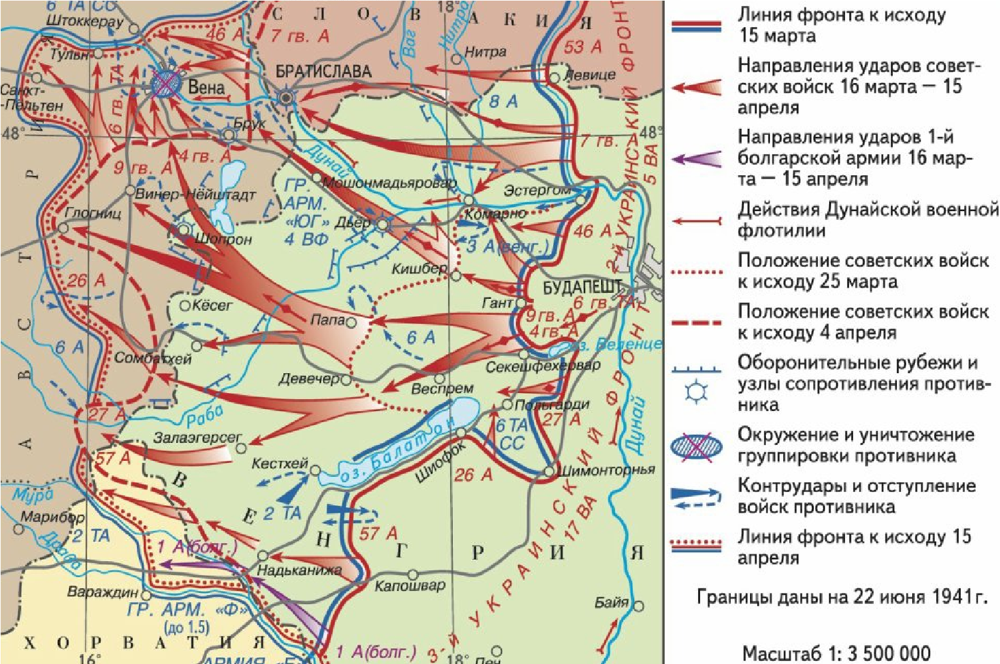
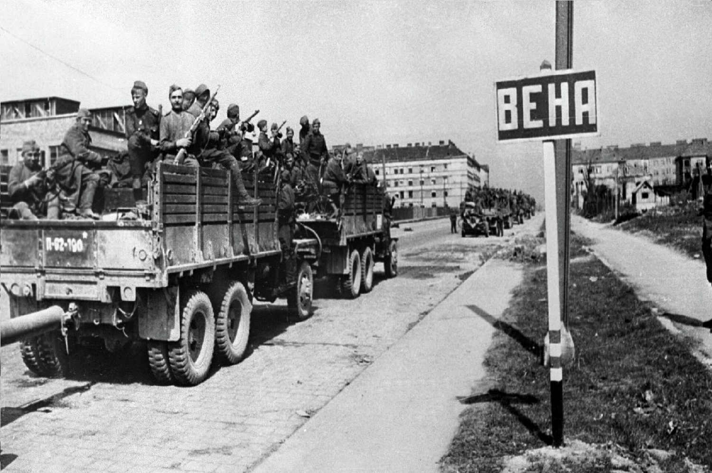
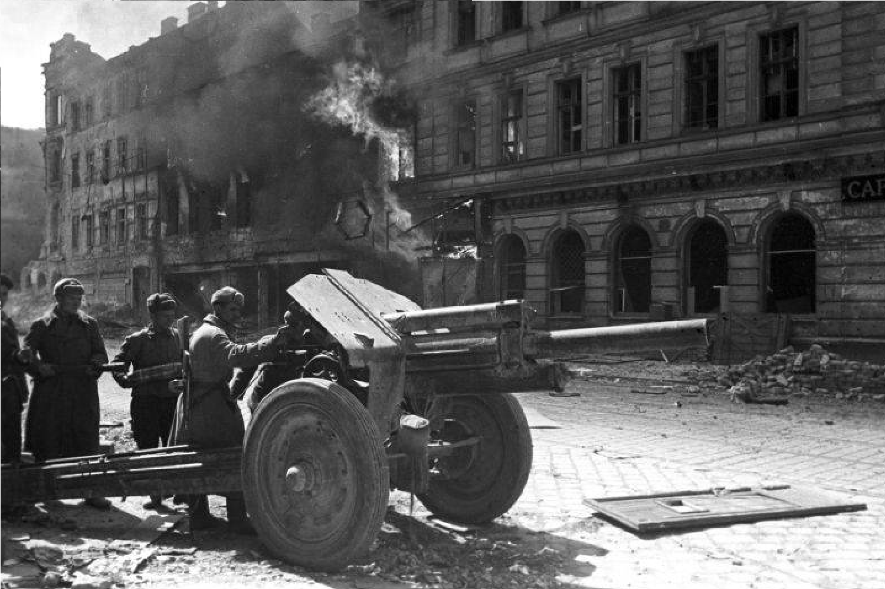

1945
|  |
ПодробннеВ 1944 году советские войска завершили освобождение восточноевропейских стран и подошли к границам Венгрии и Австрии. Положение на фронтах было напряжённым, и союзники стремились выиграть время и подавить остатки нацистских сил. |
|
Ход операции: Операция началась в марте 1945 года и продолжалась до середины апреля. Основные силы Красной Армии, включая 2-й и 3-й Украинские фронты, начали атаку на позиции немецких войск в направлении Вены. Несмотря на упорное сопротивление, советские войска смогли окружить и блокировать город, ведя интенсивные боевые действия.13 апреля 1945 года началась непосредственная атака на сам город. Бои шли в условиях уличных сражений, и советским войскам пришлось столкнуться с сильным сопротивлением со стороны немцев. Вена была полностью освобождена 15 апреля 1945 года. |
 |
|  | Освобождение Вены стало важным стратегическим успехом для СССР и способствовало окончательному поражению нацистской Германии. После освобождения города в Австрии была установлена советская оккупационная зона, и Вена стала одной из ключевых точек в послевоенном разделе Европы.Венская операция оставила заметный след в истории Второй мировой войны и имела значительное влияние на послевоенное устройство Европы и на дальнейшие советско-австрийские отношения. |